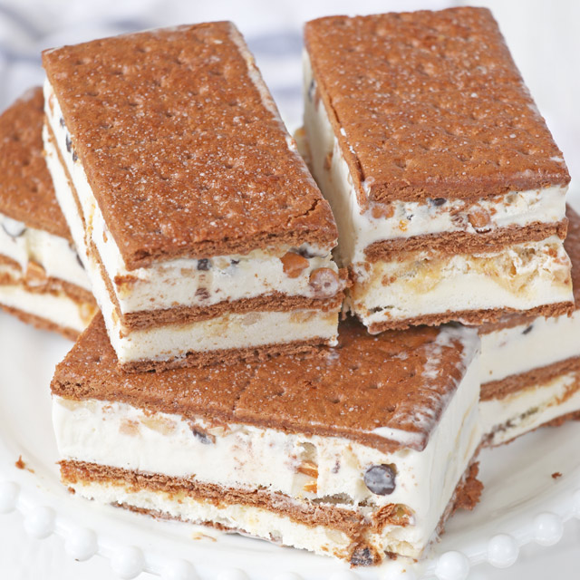

Home
Graham IceCream

Graham Ice Cream Sandwhich
This recipe is made of Graham Cookies with cream and mini chocolate along with fruit bits then was refrigerated until the cream was chilly or cold.
Ingredients
- 2 packets of 210g Graham Crackers
- 1 100g bag of Chocolate bits/chips(You could add more if you want)
- 6 250ml All Purpose Cream
- 1 250ml Sweetened All Purpose Cream
- 1 can(310ml or less) of Evaporated Milk
- 1 can (200g) of Canned Fruits/Mixed Fruits or of any desired fruit(optional)(Mangoes are recommended)
- 1 100g bag of Mini Marshmallows(optional)
Materials Needed
- Mixing bowl that can contain around 1.5kg-2kg mixture
- Spatula or Large Spoon
- Kitchen Mixer
- Refrigerator
- Containers with lids or Tupperwares
Steps
- Pour all of the All Purpose Cream and Sweetened All Purpose Cream into the Mixing bowl
- Pour around 40ml-60ml of Evaporated Milk into the Mixing bowl. (Pour accordingly to your taste)
- Pour all of the Chocolate bits/chips into the Mixing Bowl (Make sure all the chocolate bits/chips are in tiny pieces around 1cm)
- Mix all the current ingredients inside the Mixing Bowl with the Kitchen Mixer at high speed.
- Have a taste using a spare spoon if taste is according to your liking. If not you can add more Sweetened All Purpose Cream or Add more Evaporated Milk
- If you have the Mini Marshmallow, pour them all in the Mixing Bowl
- If you have the Canned Fruits/Mixed Fruits pour around 80g-100g into the Mixing Bowl(Pour accordingly to your taste) Do Not Include the Juice inside the Can. Just the fruit bits
- If you added either or both of the Mini Marshmallow and Canned Fruits mix them after mixing the Cream, Chocolate, and Evaporated Milk. Have the Kitchen Mixer on slower speed when mixing or make use of a Spatula or a Whisk
- Once done mixing the ingredients. Line up the insides of the Containers with the Graham Crackers to serve as the first layer
- Use a Spatula or a Large Spoon to scoop mixture in the Mixing Bowl and spread it on top of the Graham Crackers inside the Containers until fully covered. Don't put much of the mixture and put just enough to have less than 1 cm of thickness
- Repeat the process of having a layer of Graham Crackers then a layer of the mixture until the container is full
- Once all of the mixture is gone, put the containers' covers and insert them inside of the freezer within the refrigerator
- Wait for at least 5 hours for the Graham Ice Cream Sandwhich to chill
- Once 5 hours have passed, you can now enjoy your Graham Ice Cream Sandwhich